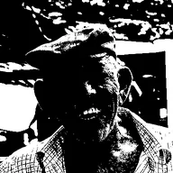

تھریشولڈ

خالص سیاہ و سفید، چمک کی حد پر تقسیم۔
سیٹنگز
| سیٹنگ | قسم | رینج | ڈیفالٹ |
|---|---|---|---|
| تھریشولڈ | نمبر | 0 سے 1 تک | 0.4 |
| فیدر | نمبر | 0 سے 1 تک | 0 |
| اِنورٹ | آن یا آف | – | آف |
| بلینڈنگ موڈ | انتخاب | نارمل, ملٹی پلائی, اسکرین, اوورلے, سافٹ لائٹ, ہارڈ لائٹ, ایڈ, ڈارکن, لائٹن, ڈفرنس, کلر ڈاج, کلر برن | نارمل |